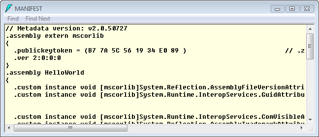

.NET Framework 2017
The Microsoft .NET Framework is a software framework that can be installed on computers running Microsoft Windows operating systems.
It includes a large library of coded solutions to common programming problems and a common language infrastructure that manages the execution of programs written specifically for the framework.
The .NET Framework supports several programming languages which allows language interoperability, whereby each language can utilize code written in other languages; in particular, the .NET library is available to all the programming languages that .NET encompasses.
The framework's Base Class Library provides
- user interface
- data access
- database connectivity
- cryptography
- web application development
- numeric algorithms
- network communications
The class library is used by programmers, who combine it with their own code to produce applications.
Programs written for the .NET Framework execute in a software environment that manages the program's runtime requirements. Also part of the .NET Framework, this runtime environment is known as the Common Language Runtime (CLR). The CLR provides the appearance of an application virtual machine so that programmers need not consider the capabilities of the specific CPU that will execute the program.
The CLR also provides other important services such as
- security
- memory management
- exception handling
The class library and the CLR together constitute the .NET Framework. In other words, from a programmer's point of view, .NET can be understood as a runtime environment and a comprehensive base class library.
The primary role of the CLR is to locate, load, and manage .NET types on your behalf. The CLR also takes care of a number of low-level details such as memory management; creating application domains, threads, and object context boundaries; and performing various checks.
Another building block of the .NET platform is the Common Type System (CTS). The CTS specification fully describes all possible data types and programming constructs supported by the runtime, specifies how these entities can interacts each other, and details how they are represented in the .NET metadata format.
Understand that a given .NET-aware language might not support each and every feature defined by the CTS. The Common Language Specification (CLS) is related specification that defines a subset of common types and programming constructs that all .NET programming languages can agree on. Thus, if we build .NET types that only expose CLS-compliant features, we can rest assured that all .NET-aware languages can consume them. Conversely, if we make use of a data type or programming construct that is outside of the bounds of the CLS, we cannot guarantee that every .NET programming language can interact with our .NET code library.
In addition to the CLR and CTS/CLS specifications, the .NET platform provides a base class library that is available to all .NET programming languages. Not only does this base class library encapsulate various primitives such as threads, file input/output (I/O), graphical rendering, and interaction with various external hardware devices, but it also provides support for a number of services required by most real-world applications.
C#'s core syntax looks very similar to the syntax of Java. Both C# and Java are members of the C family of programming languages. C# is a cleaned-up version of Java as Java is a cleaned-up version of C++.
C# has adopted a number of constructs traditionally found in various functional languages such as LISP or Haskell. Furthermore, with the advent of LINQ, C# supports a number of programming constructs that make it quite unique in the programming landscape.
Here are core C# features:
- No pointers required! C# programs typically have no need for direct pointer manipulation.
- Automatic memory management through garbage collection. C# does not support delete keyword.
- Formal syntactic constructs for classes, interfaces, structures, enumerations, and delegates.
- The C++-like ability to overload operators for a custom type, without the complexity such as making sure to return *this to allow chaining is not your problem.
- Support for attribute-based programming. This brand of development allows us to annotate types and their members to further qualify their behavior.
- The ability to build generic types and generic members. Using generics, we are able to build very efficient and type-safe code that defines numerous placeholders specified at the time we interact with the generic item.
- Support for anonymous methods, which allow us to supply an inline function anywhere a delegate type is required.
- Numerous simplifications to the delegate/event method model, including covariance, contravariance, and method group conversion.
- The ability to define a single type across multiple code files using partial keyword.
- Support for strongly typed queries (LINQ - Language Integrated Query) used to interact with various forms of data.
- Support for anonymous types, which allow us to model the shape of a type rather than its behavior.
- The ability to extend the functionality of an existing type using extension methods.
- Inclusion of a lambda operator (=>), which even further simplifies working with .NET delegate types.
- A new object initialization syntax, which allows us to set property values at the time of object creation.
The most important point to understand about the C# is that it can only produce code that can execute within the .NET runtime. We could never use C# to build a native COM server or an unmanaged WIN32 API specification.
The term used to describe the code targeting the .NET runtime is managed code. The binary unit that contains the managed code is termed as assembly. Conversely, code that cannot be directly hosted by the .NET runtime is termed unmanaged code.
Here is the summary of managed vs unmanaged code:
- Managed:
Managed is short for managed by the CLR.
Managed code is created by Visual Basic .NET and C# compilers. It runs on the CLR (Common Language Runtime), which, among other things, offers services like garbage collection, run-time type checking, and reference checking, and so on. - Unmanaged:
Unmanaged code is compiled into machine code and therefore executed by the OS directly. Since a code created by Visual Basic or C# is a managed code, all unmanaged codes are written in C/C++. So, all code produced by traditional C/C++ compilers become unmanaged code. Therefore, unlike the managed code which runs within a secure framework (.NET CLR), the unmanaged code is directly exposed to dangerous things like memory / threads issues.
- Interoperability
Because computer systems commonly require interaction between new and older applications, the .NET Framework provides means to access functionality that is implemented in programs that execute outside the .NET environment. Access to COM components is provided in the System.Runtime.InteropServices and System.EnterpriseServices namespaces of the framework; access to other functionality is provided using the P/Invoke feature. - Common Runtime Engine
The Common Language Runtime (CLR) is the execution engine of the .NET Framework. All .NET programs execute under the supervision of the CLR, guaranteeing certain properties and behaviors in the areas of memory management, security, and exception handling. - Language Independence
The .NET Framework introduces a Common Type System, or CTS. The CTS specification defines all possible data types and programming constructs supported by the CLR and how they may or may not interact with each other conforming to the Common Language Infrastructure (CLI) specification. Because of this feature, the .NET Framework supports the exchange of types and object instances between libraries and applications written using any conforming .NET language. - Base Class Library
The Base Class Library (BCL), part of the Framework Class Library (FCL), is a library of functionality available to all languages using the .NET Framework. The BCL provides classes which encapsulate a number of common functions, including file reading and writing, graphic rendering, database interaction, XML document manipulation and so on. - Simplified Deployment
The .NET Framework includes design features and tools that help manage the installation of computer software to ensure that it does not interfere with previously installed software, and that it conforms to security requirements. - Security
The design is meant to address some of the vulnerabilities, such as buffer overflows, that have been exploited by malicious software. Additionally, .NET provides a common security model for all applications. - Portability
The design of the .NET Framework allows it to theoretically be platform agnostic, and thus cross-platform compatible. That is, a program written to use the framework should run without change on any type of system for which the framework is implemented. While Microsoft has never implemented the full framework on any system except Microsoft Windows, the framework is engineered to be platform agnostic, and cross-platform implementations are available for other operating systems.
Microsoft submitted the specifications for the Common Language Infrastructure (which includes the core class libraries, Common Type System, and the Common Intermediate Language), the C# language, and the C++/CLI language to both ECMA and the ISO, making them available as open standards. This makes it possible for third parties to create compatible implementations of the framework and its languages on other platforms.
In addition to the five languages that shipped with the .NET Framework SDK 3.5 (C#, Visual Basic.NET, j#, C++/CLI, and JScript.NET), there are .NET compilers for Smalltalk, COBOL, and Pascal.
Regardless of which .NET languages we choose, we need to understand that despite the fact that .NET binaries take the same file extension as COM servers and unmanaged Win32 binaries (*.dll or *.exe), they have absolutely no internal similarities. For instance, *.dll .NET binaries do not export methods to facilitate communications with the COM runtime (given that .NET is not COM). Furthermore, .NET binaries are not described using COM type libraries and are not registered into the system registry.
Perhaps most important, .NET binaries do not contain platform specific instructions, but rather platform-agnostic intermediate language (IL) and type metadata.
(note) IL (Intermediate Language), CIL (Common Intermediate Language), and MSIL (Microsoft Intermediate Language) are all describing the same thing.
When a *.dll or *.exe has been created using a .NET-aware compiler, the resulting module is bundled into an assembly.
An assembly contains CIL code, which is conceptually similar to Java bytecode in that is not compiled into platform specific instructions until absolutely necessary such as CIL is referenced for use by the .NET runtime.
The CIL code is housed in .NET assemblies. As mandated by specification, assemblies are stored in the Portable Executable (PE) format, common on the Windows platform for all dll and exe files.
In addition to CIL instructions, assemblies also contain metadata that describes the characteristics of every type within the binary. In other words, all CIL is self-describing through .NET metadata. The CLR checks the metadata to ensure that the correct method is called. Metadata is usually generated by language compilers but developers can create their own metadata through custom attributes. Metadata contains information about the assembly, and is also used to implement the reflective programming capabilities of .NET Framework.
For instance, if we have a class names Circle, the type metadata describes details such as its baseclass Shape, which interfaces are implemented by Circle, as well as a full description of each member supported by the Circle.
.NET metadata is a dramatic improvement to COM type metadata. COM binaries are typically described using an associated type library (which is little more than a binary version of Interface Definition Language (IDL) code). The problem with COM type information are that it is not guaranteed to be present and the fact the IDL code has no way to document the externally referenced servers that are required for the correct operation of the current COM server. In contrast, .NET metadata is always present and is automatically generated by a given .NET aware compilers.
In addition to CIL and type metadata, assemblies themselves are also described using metadata, which is officially termed a manifest. The manifest contains information about the current version of the assembly, culture information (used for localizing string and image resources), and a list of all externally referenced assemblies that are required for proper execution.
What is gained by compiling source code into CIL rather than directly to a specific instruction set?
One benefit is language integration. Since each .NET-aware compiler produces nearly identical CIL instructions, all languages are able to interact within a well-defined binary arena.
Given that CIL is platform-agnostic, the .NET Framework itself is platform-agnostic, providing the same benefits Java developers have accustomed to: single code base running on several OS. Actually, there is an international standard for the C# language, and a large subset of the .NET platform and implementation already exist for many non-Windows OS.
(note) IL (Intermediate Language), CIL (Common Intermediate Language), and MSIL (Microsoft Intermediate Language) are all describing the same thing.
Since assemblies contain CIL instructions, rather than platform-specific instructions, CIL code must be compiled on the fly before use. The entity that compiles CIL code into meaningful CPU instructions is termed a just-in-time (JIT) compiler, which sometimes referred as Jitter. The .NET runtime environment leverages a JIT compiler for each CPU targeting the runtime, each optimized for the underlying platform.
As a given Jitter compiles CIL instructions into corresponding machine code, it will cache the results in memory in a manner suited to the target OS. In this way, if a call is made to a method named PrintDocument(), the CIL instructions are compiled into platform-specific instructions on the first invocation and retained in memory for later use. Therefore, the next time PrintDocument() is called, there is no need to recompile the CIL.
In addition to CIL instructions, a .NET assembly contains metadata. It describes each and every type (class, structure, enumeration, etc.) defined in the binary, as well as the members of each type (properties, methods, events, etc.). It is always the job of the compiler (not the programmer) to emit the latest type metadata. Because .NET metadata is so meticulous, assemblies are completely self-describing entities.
Metadata is used by numerous aspects of the .NET runtime environment, as well as by various development tools. For instance, the IntelliSense feature provided by tools such as Visual Studio is made possible by reading an assembly's metadata at design time. Metadata is also used by various object browsing utilities, debugging tools, and the C# compiler itself. To be sure, metadata is the backbone of numerous .NET technologies including Windows Communication Foundation (WCF), XML web services, the .NET remoting layer, reflection, late binding, and object serialization.
Programmatically speaking, the term runtime can be understood as a collection of external services that are required to execute a given compiled unit of code. For example, when developers are using the MFC to create a new application, they are aware that their code requires the MFC runtime library (i.e. mfc42.dll). Other languages also have a corresponding runtime. VB6 codes are ties to a runtime module or two such as msvbvm60.dll. Java codes are tied to the Java Virtual Machine (JVM).
The .NET platform offers yet another runtime system. The key difference between the .NET runtime and the various other runtimes is the fact that the .NET runtime provides a single well-defined runtime layer that is shared by all languages and platforms that are .NET-aware.
The crux of the CLR is physically represented by a library called mscoree.dll (the Common Object Runtime Execution Engine). When an assembly is referenced for use, mscoree.dll is loaded automatically, which in turn loads the required assembly into memory. The runtime engine is responsible for a number of tasks. First, it is the entity in charge of resolving the location of an assembly and finding the requested type within the binary by reading the contained metadata. The CLR then lays out the type in memory, compiles the associated CIL into platform-specific instructions, performs any necessary security checks, and then executes the code.
In addition to loading our custom assemblies and creating custom types, the CLR will also interact with the types contained within the .NET base class libraries when required. Although the entire base class library has been broken into a number of discrete assemblies, the key assembly is mscorlib.dll. It contains a large number of core types that encapsulate a wide variety of common programming tasks as well as the core data types used by all .NET languages. When we build .NET solution, we automatically have access to this particular assembly.
Intermediate Language Disassembler utility (ildasm.exe), which ships with the .NET Framework 3.5 SDK, allows us to load up any .NET assembly and investigate its contents including the associated manifest, CIL code, and any type metadata.
To load (ildasm.exe): open a Visual Studio command prompt -> type ildasm -> Enter.
Then, proceed to the File -> Open menu command -> Navigate to an assembly to explore.
Here is the CIL code for the above project. ildasm.exe allows us to see CIL code.
In addition to showing the namespaces, types, and members contained in a given assembly, (ildasm.exe) also allows us to view the CIL instructions for a given member. For instance, if we double-click the Main() method of the Program class of the CIL code, a separate window would display the underlying CIL.
We can also view the type metadata for the currently loaded assembly by pressing Ctrl+M.
Finally, we can view the contents of the assembly's manifest, simply double-click the MANIFEST icon.
.NET assemblies can be developed and executed on non-Microsoft OS (Mac OS X, Linux, and Solaris) thanks to CLI (Common Language Infrastructure).
Every programming language has a set of intrinsic type representing such object as integers, floating point numbers, characters, etc. Typically the characteristics of these types vary from one language to another and from platform to platform.
However, this lack of uniformity makes it difficult if we want programs to play well with other programs and libraries written in different languages. So, there must be a set of standards.
The Common Language Infrastructure (CLI) is a set of standards that ties all component of the .NET framework into a cohesive and consistent system. It lays out the concepts and architecture of the system and specifies the rules and convention to which all the software must adhere.
Both the CLI and C# have been approved as open international standard specifications by ECMA International.
Although most programmers don't need to know the details of the CLI specifications, we should at least be familiar with the meaning and purpose of the Common Type System and Common Language Specification.
- Common Type System (CTS)
The Common Type System (CTS) defines the characteristics of the types that must be used in managed code. Some important aspect of the CTS are the following:
- The CTS defines a rich set of intrinsic types, with fixed, specific characteristics for each type.
- The types provided by a .NET-compliant programming language generally map to some specific subset of this defined set of intrinsic types.
- One of the most important characteristics of the CTS is that all types are derived from a common base class - object.
- Common Language Specification (CLS)
The Common Language Specification (CLS) specifies the rules, properties, and behaviors of a .NET-compliant programming language.
Ph.D. / Golden Gate Ave, San Francisco / Seoul National Univ / Carnegie Mellon / UC Berkeley / DevOps / Deep Learning / Visualization